Here you can read more about the production process. An intensive, traditional process that has been used by many generations.
Please note our production capacity allows us to handle large productions as well.
One:
Start of the production process Potters Wheel
The models are shaped on the Potter’s Wheel or with a mold using Red Clay.
Two:
When the red clay models have dried, they are plunged into liquid white clay.
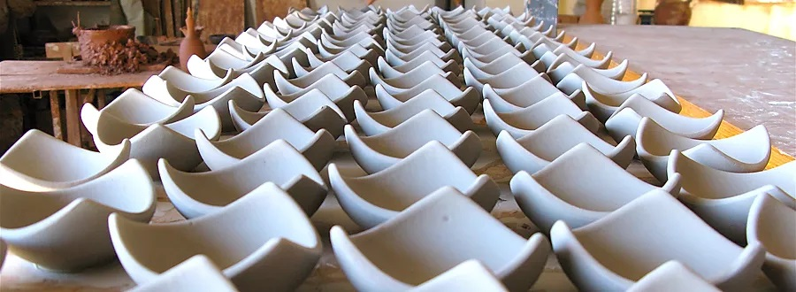 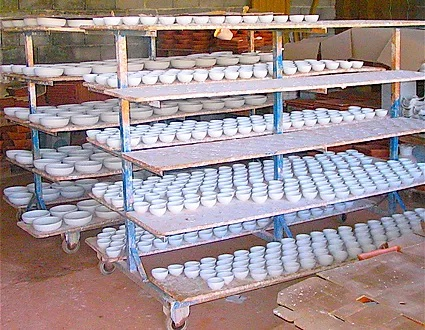Three:
After this liquid clay has dried, decorations are drawn into this clay by hand with iron tweezers.
The red clay underneath the white clay will show again after this procedure.
A very special effect.
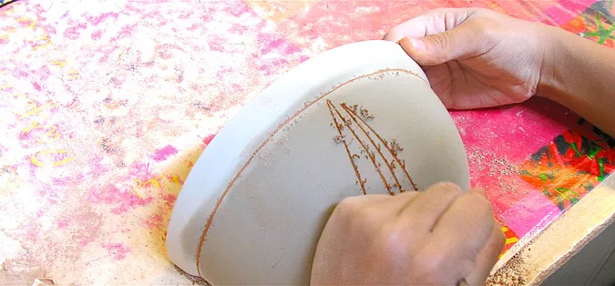 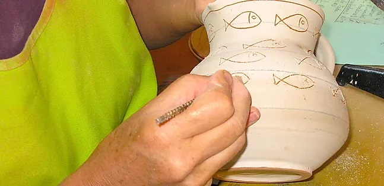
Four:
Then each separate part of the decorations are hand-painted in the required colors.
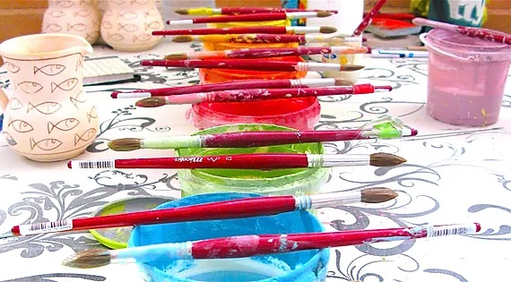 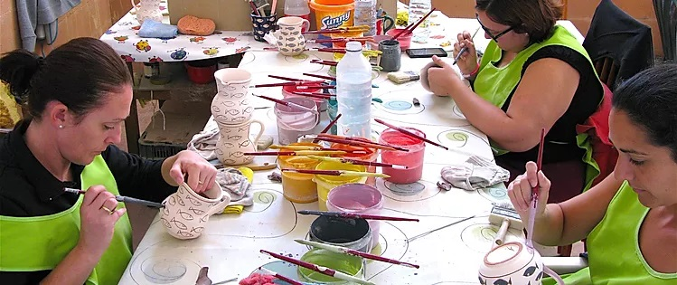 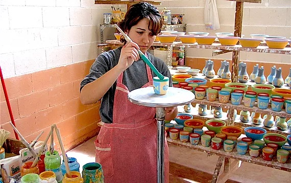 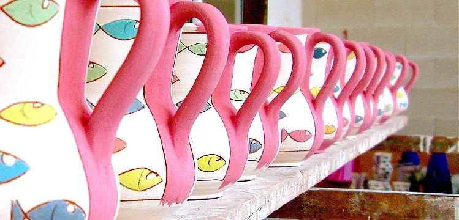Five:
When the paint has dried all models are plunged in high quality glaze.
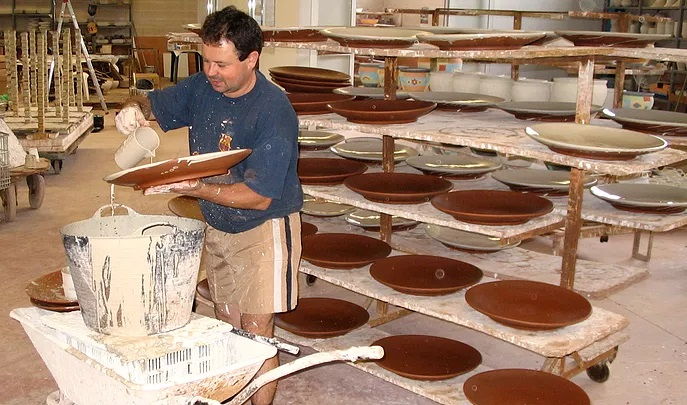 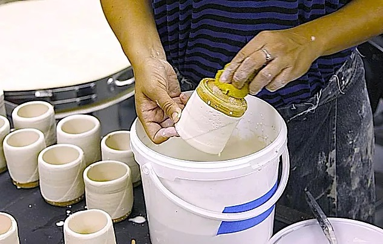
Six:
When this glaze has dried the models are baked in the oven. After cooling the items are finished and the ceramics items have very special relief within the creative decorations. Unique and only produced this way by our factory.
This unique production process makes our ceramics very different and exclusive.
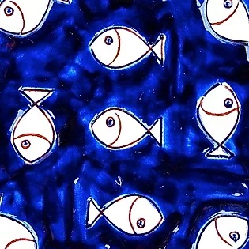